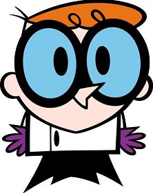

Laten we starten met de rondleiding!
Welkom bij de interactieve rondleiding van onze jQuery-cursus.
JQuery is een JavaScript dat naar het motto 'write less, do more' zowel minder codeerwerk als dataverbruik oplevert. Zo is er een nette scheiding tussen html, css en js; en wordt het praktischer om uitgebreide animaties te combineren.
Graag nemen we je stapsgewijs mee doorheen de toegepaste kennis die je zal op doen tijdens de opleiding.
Opgemerkt hoe er een custom dialoogvenster verscheen? Deze kan jijzelf volledig vormgeven! Ook verscheen het inhoudblokje met een 'fade', na een kleine vertraging. Ook kan je met zeer simpele code al een stukje inhoud doen laten verdwijnen of verschijnen door middel van een klik op de knop.
Dit zijn maar enkele basisvoorbeelden van hoe jQuery wordt toegepast in webdesign & programming.
Volg de stappen, experimenteer en verken verder de wondere wereld van Jquery!